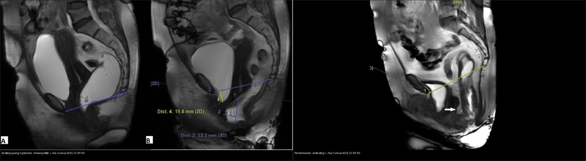
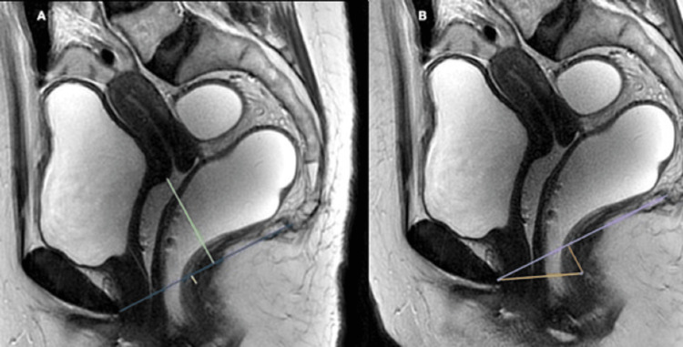
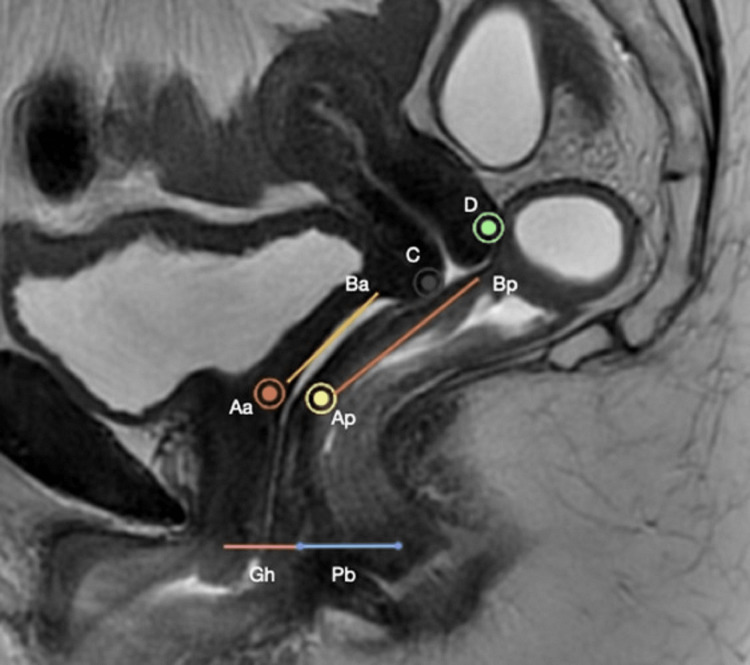
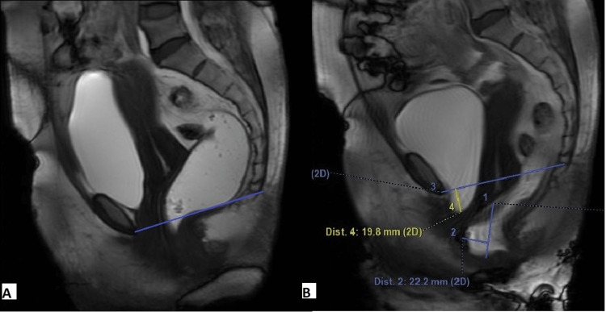
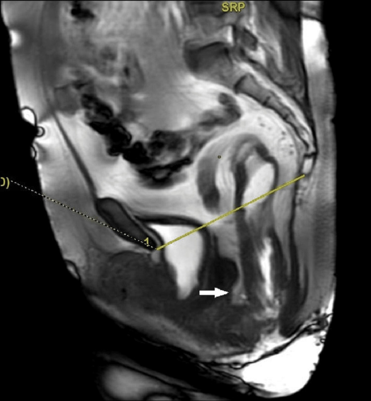
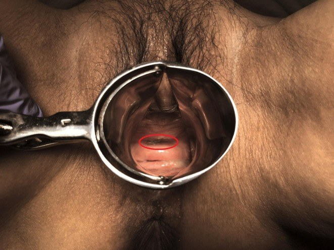
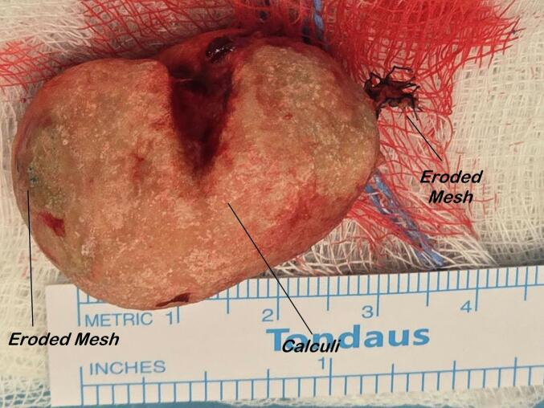
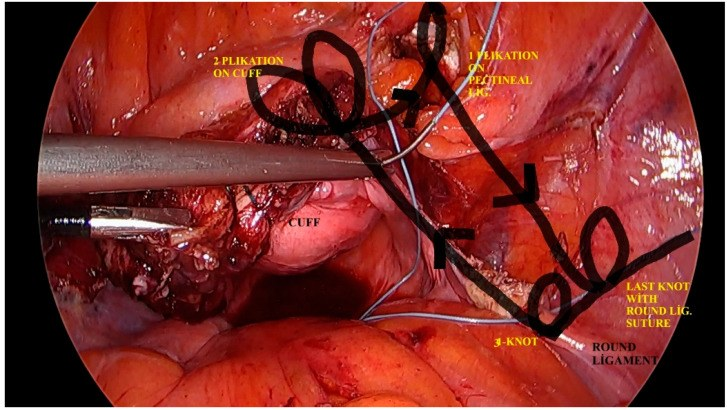

547 — Sa tạng chậu nữ: phân độ POP‑Q & lựa chọn lưới nâng (mesh)
Tags: pattern:sa-tang-chau vung:tieu-khung score:POP-Q protocol:MRI-san-chau protocol:luoi-nang
Mức chắc chắn (certainty): tổng hợp y văn (literature synthesis) — nhóm tự biên từ y văn mở (bài gốc có Fig. ID ghi rõ, gồm ca nguyên văn), chưa gắn một bệnh án riêng.
1. Tổng quan — sa tạng chậu là bệnh của "hệ treo", đo bằng mặt phẳng màng trinh
- Sa tạng chậu (pelvic organ prolapse, POP): bàng quang, tử cung/đỉnh âm đạo, trực tràng tụt xuống dưới sàn chậu do yếu cân–mạc nâng (levator ani) + cân chậu (endopelvic fascia) sau sinh nở, mãn kinh, béo phì, tăng áp lực ổ bụng mạn. Bệnh tăng theo tuổi/post‑menopause.
- TẠI SAO chuẩn hóa bằng POP‑Q (Pelvic Organ Prolapse Quantification) thay vì mô tả "sa độ…": lấy mặt phẳng màng trinh (hymen) làm mốc thay cho ngã ba, nên đo được 6 điểm ở vị trí cố định và so sánh được giữa các lần khám/phẫu thuật viên: 3 điểm khoang trước–giữa (Aa, Ba ở thành trước; C = cổ tử cung/đỉnh âm đạo), 2 điểm khoang sau (Ap, Bp) và D (túi cùng Douglas/flexura sau âm đạo; bỏ D nếu đã cắt tử cung), cộng 3 số đo: lỗ sinh dục (genital hiatus, gh), thân đáy chậu (perineal body, pb), tổng độ dài âm đạo (total vaginal length, tvl).
- TẠI SAO có quy ước dấu: điểm trên màng trinh = âm (–), ngay màng trinh = 0, dưới màng trinh = dương (+) — nên số càng dương thì sa càng nặng, ngược trực giác.
- Phân độ POP‑Q: độ 0 = không sa; độ I = điểm thấp nhất > 1 cm trên màng trinh; độ II = trong khoảng 1 cm quanh màng trinh; độ III = sa > 1 cm dưới màng trinh nhưng chưa thoát hoàn toàn; độ IV = lộn toàn bộ (procidentia) — độ chung = độ CAO NHẤT của 3 khoang.
- Dịch tễ (định lượng): khoảng 20% phụ nữ được mổ vì POP/rối loạn tiểu không tự chủ trong đời; tỷ lệ hiện mắc 41–50% ở nữ cao tuổi, 30–50% sau mãn kinh; ~42% nữ 50–79 tuổi ở Mỹ (Kayondo, Cureus 2026). Trong một loạt chụp MRI (Jha, Cureus 2023), 70% bệnh nhân sa nhiều khoang, khoang trước hay gặp nhất (cystocele 90%, tăng di động niệu đạo 76%, sa tử cung 76%, tụt ngã ba hậu môn–trực tràng 86%, rectocele trước 84%).
- TẠI SAO MRI động học (dynamic pelvic MRI) hỗ trợ POP‑Q: POP‑Q là khám lâm sàng, không cho biết tạng nào đang sa sau niêm mạc âm đạo (cystocele thật hay enterocele, lồng trực tràng). MRI T2 sagittal 4 thì (nghỉ → ép → rặn → tống phân) định vị tạng + khoang, không tia X; đo H line/M line (giãn lỗ cơ hoành/sa sàn cơ) và hạ tạng so với PCL — lấp đúng "điểm mù" của thăm khám.
2. Mẫu hình + chẩn đoán phân biệt theo khoang (Gamut)
- Gamut theo 3 khoang (ánh xạ POP‑Q ↔ MRI):
- Khoang trước (Aa, Ba ↔ cystocele): sa bàng quang (cystocele), tăng di động niệu đạo (urethral hypermobility), urethrocele.
- Khoang giữa (C, D ↔ sa tử cung/đỉnh âm đạo): sa tử cung (hysterocele), sa đỉnh âm đạo (vault prolapse, sau cắt tử cung), peritoneocele/enterocele (túi cùng chứa phúc mạc/quấn ruột non).
- Khoang sau (Ap, Bp ↔ rectocele): rectocele (phồng thành trước trực tràng), lồng trực tràng (intussusception), sa trực tràng ra ngoài.
- Nhóm "kẻ giả danh" (không phải POP nhưng hay bị gọi là cystocele): túi thừa niệu đạo (urethral diverticulum) — khối dịch quanh niệu đạo; nang Gartner/đơn thuần âm đạo; khối niệu đạo.
- Gợi nhớ đọc theo trình tự: (1) chấm điểm POP‑Q → (2) độ cao nhất thuộc khoang nào → (3) MRI xác định tạng nào đang sa → (4) có sa sàn lan tỏa (H/M line giãn) không → (5) lựa chọn treo đỉnh (native tissue hay lưới).
3. Bảng so sánh phân biệt (ma trận đối chiếu)
| Thực thể (entity) | Hình ảnh điển hình | Chốt vào (rule-in) | Chốt loại (rule-out) | Gợi ý xác nhận |
|---|---|---|---|---|
| Cystocele (khoang trước) | MRI: đáy bàng quang tụt dưới PCL/màng trinh khi rặn; POP‑Q: Aa/Ba dương | Đáy bàng quang hạ > 3 cm dưới PCL (độ 2–3); Ba/Aa dương | Bàng quang còn trên màng trinh/PCL mọi thì → không sa | POP‑Q điểm Aa/Ba + MRI thì rặn |
| Sa tử cung / đỉnh âm đạo (khoang giữa) | MRI: cổ tử cung/đỉnh âm đạo tụt xuống; POP‑Q: điểm C dương | C hạ > 1 cm dưới màng trinh; sau cắt tử cung = sa đỉnh âm đạo | Điểm C còn âm (trên màng trinh) → không sa đỉnh | POP‑Q điểm C (và D) |
| Enterocele / peritoneocele (khoang ảo) | MRI: túi phúc mạc (có/không quấn ruột non) tụt xuống dưới màng trinh/PCL | Túi phúc mạc/quấn ruột non hạ dưới PCL khi rặn | Chỉ phồng thành trực tràng, không túi phúc mạc → rectocele | MRI thì tống phân (± cản quang ruột non) |
| Rectocele (khoang sau) | MRI: phồng thành trước trực tràng khi tống phân; POP‑Q: điểm Ap/Bp dương | Lồi > 2 cm (lớn 2–4 cm, > 4 cm = nặng) | Lồi < 2 cm thường không triệu chứng | MRI thì tống phân; POP‑Q Ap/Bp |
| Tăng di động niệu đạo (urethral hypermobility) | MRI/thăm khám: trục niệu đạo xoay ra sau khi rặn; góc niệu đạo–xương mu giảm | Xoay niệu đạo > 30° khi rặn; điểm Q‑tip dương | Niệu đạo cố định, không xoay → nghĩ nguyên nhân nội tại | Thăm khám Q‑tip + MRI động |
| Túi thừa niệu đạo (mimic cystocele) | MRI T2: khối dịch hình yên ngựa (saddle‑shaped) ôm quanh niệu đạo | Khối dịch ôm quanh niệu đạo, không phải bàng quang | Đáy bàng quang tụt xuống thật → cystocele | MRI T2 axial/sagittal |

Trái: sa khoang trước — đáy bàng quang tụt xuống (đo Dist. 4: 19,8 mm; Dist. 2: 22,2 mm). Phải: peritoneocele — túi phúc mạc sa xuống túi cùng, kèm lồng niêm mạc trực tràng trong lòng (mũi tên). Cùng bệnh nhân/thì tống phân; Nguồn: Jha P et al., Cureus 2023, PMC10560544 Fig. 3 + Fig. 4, CC BY 4.0. Ảnh ghép letterbox.Ba mốc cần đọc đúng
- Vị trí niêm mạc tụt so với màng trinh → pop‑Q độ I–IV (và là mốc so sánh mọi lần khám).
- H line/M line: H ≤ 6–8 cm bình thường (8–10 cm vừa, > 10 cm lớn), M ≤ 2–4 cm (4–6 cm vừa, > 6 cm lớn) — H/M giãn = sa sàn lan tỏa.
- Một cấu trúc bất thường = tạng nào: bàng quang (cystocele) vs túi phúc mạc/quấn ruột (enterocele/peritoneocele) vs chỉ trực tràng (rectocele).
4. Protocol + hệ phân độ/điểm chuẩn hóa
- Chỉ định: khám sa tạng chậu, tiên lượng trước-sau treo đỉnh (sacrocolpopexy/pectopexy), phân biệt sa khoang trước vs enterocele, đánh giá rối loạn tống phân kèm (nối bài 546).
- POP‑Q (khám lâm sàng, tư thế sản khoa, rặn tối đa): đo 6 điểm (Aa, Ba, C, D, Ap, Bp) + gh, pb, tvl, quy chiếu màng trinh. Độ chung = độ cao nhất trong 3 khoang.
- MRI động học sàn chậu: T2 sagittal (+ axial T2), 4 thì; bơm gel trực tràng ~120–300 mL; có thể cản quang ruột non nếu nghi enterocele. Đo PCL, H line, M line, ARJ.

PCL vẽ từ bờ dưới khớp mu → khớp cụt cuối; đo vị trí đáy bàng quang, môi trước cổ tử cung, ngã ba hậu môn–trực tràng so với PCL. Nguồn: Jha P et al., Cureus 2023, PMC10560544 Fig. 2, CC BY 4.0.- Tương hợp MRI ↔ POP‑Q (Jha, Cureus 2023): H line 6–8 / 8–10 / > 10 cm, M line 2–4 / 4–6 / > 6 cm, cystocele–tụt tử cung 1–3 / 3–6 / > 6 cm, rectocele < 2 / 2–4 / > 4 cm = nhẹ / vừa / nặng. Tương quan MRI–lâm sàng mạnh ở khoang trước và giữa, yếu ở khoang sau.
Lựa chọn điều trị & "câu chuyện lưới nâng" (định lượng)
- Không mổ: tập cơ sàn chậu (pelvic floor muscle training), vòng nâng âm đạo (pessary) — nhưng biến chứng của pessary dao động 11–73% (Tsunoda, IJU Case Rep 2026).
- Native tissue repair (NTR) vs lưới qua âm đạo (transvaginal mesh, TVM): trong một RCT/thử nghiệm lâm sàng, biến chứng TVM 30,61% vs NTR 10,81% (P = 0,028); TVM: lộ/xói mòn lưới 6,12%, đau mạn 6,12%, nhiễm trùng 6,12% (He, Front Surg 2026). Lộ lưới qua âm đạo ở phương Tây thường > 10% (0,7–3,2% theo y văn Nhật).
- Lịch sử FDA (mốc quyết định): lưới đầu tiên được FDA chấp thuận cho POP 2002; cảnh báo 2008 và 2011; xếp nguy cơ cao (class III) 2016; cấm bán lưới qua âm đạo 2019 (Degirmenci, J Clin Med 2024). → hiện không dùng TVM thường quy.
- Sacrocolpopexy (treo đỉnh qua bụng/nội soi, "tiêu chuẩn vàng" cho sa đỉnh/vault): neo mảnh ghép vào mỏm nhô xương cùng. Lộ lưới sau LSC: 16,0% (27/169) khi kèm cắt tử cung toàn bộ vs 3,4% (1/29) khi giữ tử cung (Yin, Int Urogynecol J 2026).
- Pectopexy không lưới (native tissue, treo vào dây chằng lược/Cooper): cải thiện điểm C từ 0,8 cm trên màng trinh → 7,2 cm trên màng trinh sau 12 tháng, 0% xói mòn lưới (Yaman, J Clin Med 2026).
flowchart TD
A[Sa tạng chậu: khám tư thế sản khoa + rặn] --> B[Chấm POP-Q: 6 điểm Aa Ba C D Ap Bp + gh pb tvl]
B --> C{Độ cao nhất thuộc khoang nào?}
C -->|Aa/Ba dương| D[Khoang trước: cystocele]
C -->|C dương| E[Khoang giữa: sa tử cung/đỉnh âm đạo]
C -->|Ap/Bp dương| F[Khoang sau: rectocele]
D --> G[MRI động 4 thì: xác định tạng thật<br/>cystocele vs enterocele vs urethral diverticulum]
E --> G
F --> G
G --> H{Độ nặng & nhu cầu}
H -->|Nhẹ, không triệu chứng| I[Tập cơ sàn chậu / pessary]
H -->|Sa đỉnh / tái phát / nặng| J[Treo đỉnh: sacrocolpopexy hoặc pectopexy not-lưới]
J --> K[Cảnh giác biến chứng muộn: lộ/xói mòn lưới, đau, nhiễm trùng]
5. Biến thể bình thường và cạm bẫy
- Màng trinh là mốc DI ĐỘNG: sai lệch khi khám → đừng dựa một lần; POP‑Q là phân độ tổng hợp, chỉ lấy độ cao nhất. Điểm âm = trên màng trinh (dễ đọc nhầm nếu quên quy ước dấu).
- Túi thừa niệu đạo giả cystocele: khối dịch hình yên ngựa ôm quanh niệu đạo — đừng quy kết cystocele rồi mổ sa.
- Lộ/xói mòn lưới MUỘN (rất muộn): đã ghi nhận lộ lưới 13 năm sau TVM, xuất hiện sau 3 năm dùng pessary — biến chứng lưới không có "thời hạn an toàn".
- Xói mòn lưới vào niệu đạo có thể tạo túi thừa niệu đạo + sỏi (đau, tiểu máu) — phải nghĩ đến biến chứng lưới khi tìm nguyên nhân.
- TVM không dùng thường quy (FDA 2019) — không đánh đồng mọi "lưới" với nhau: sacrocolpopexy/pectopexy là bối cảnh khác.
- Cạm bẫy "chỉ khoang sau": tương quan MRI–lâm sàng khoang sau yếu → một mình POP‑Q không loại trừ lồng trực tràng/enterocele; cần động học MRD.
- Sa sàn lan tỏa (descending perineal syndrome): H/M line giãn + sa nhiều khoang → sửa một khoang dễ tái phát; phải treo đỉnh.
6. Tự lượng giá — Blind Quiz
Ca 1 — Đọc bản đồ POP‑Q trên MRI: các điểm nằm ở đâu so với màng trinh?

- Gợi ý lâm sàng: nữ khám sa tạng chậu.
- Hỏi: kể tên 6 điểm? Điểm nào thuộc khoang trước/giữa/sau? 3 số đo phụ là gì?
Bấm để hiện đáp án (findings + chẩn đoán)
- Dấu hiệu (findings): Aa, Ba (thành trước), C (cổ tử cung/đỉnh âm đạo), D (túi cùng; bỏ nếu cắt tử cung), Ap, Bp (thành sau); cộng Gh (lỗ sinh dục), Pb (thân đáy chậu), tvl (độ dài âm đạo).
- Chẩn đoán (diagnosis): bản đồ 6 điểm POP‑Q quy chiếu màng trinh — âm = trên màng trinh, dương = dưới; độ chung lấy độ cao nhất 3 khoang.
- Nguồn ảnh: Jha P et al., Cureus 2023, PMC10560544 Fig. 1, CC BY 4.0.
Ca 2 — Thì rặn: đáy bàng quang ở đâu so với PCL?

- Gợi ý lâm sàng: nữ 48 tuổi, tiểu không tự chủ + đại tiện không hết phân.
Bấm để hiện đáp án (findings + chẩn đoán)
- Dấu hiệu (findings): lúc nghỉ bàng quang và môi trước cổ tử cung ở trên PCL; khi rặn đáy bàng quang tụt xuống dưới PCL (đo 19,8 mm / 22,2 mm) = cystocele.
- Chẩn đoán (diagnosis): sa khoang trước (cystocele) — vì đáy bàng quang hạ dưới PCL khi rặn; tương ứng POP‑Q Aa/Ba dương.
- Nguồn ảnh: Jha P et al., Cureus 2023, PMC10560544 Fig. 3, CC BY 4.0.
Ca 3 — Sa sau cắt tử cung: túi dịch giữa trực tràng–âm đạo là gì?

- Gợi ý lâm sàng: nữ 53 tuổi, đau khi đại tiện, đã cắt tử cung.
Bấm để hiện đáp án (findings + chẩn đoán)
- Dấu hiệu (findings): túi phúc mạc sa xuống khoang giữa (peritoneocele) ở cuối thì tống phân + lồng niêm mạc trực tràng trong lòng (mũi tên).
- Chẩn đoán (diagnosis): peritoneocele/enterocele + lồng trực tràng — phân biệt với rectocele (chỉ trực tràng, không túi phúc mạc); nguy cơ tái phát nếu chỉ sửa khoang sau mà không treo đỉnh.
- Nguồn ảnh: Jha P et al., Cureus 2023, PMC10560544 Fig. 4, CC BY 4.0.
Ca 4 — Đối chiếu hai khoang: đây là sa gì?
Bấm để hiện đáp án (findings + chẩn đoán)
- Dấu hiệu (findings): trái đáy bàng quang tụt xuống = cystocele (khoang trước); phải túi phúc mạc + lồng trực tràng = peritoneocele/enterocele (khoang giữa/ảo) + lồng trực tràng.
- Chẩn đoán (diagnosis): phân định khoang bằng MRI động học — cùng "sa" nhưng khác khoang, khác cách treo; khoang sau tương quan lâm sàng yếu nên MRI quyết định.
- Nguồn ảnh: Jha P et al., Cureus 2023, PMC10560544 Fig. 3 + Fig. 4, CC BY 4.0.
Ca 5 — Khám thấy khối đỏ ở thành trước âm đạo nhiều năm sau mổ sa: chẩn đoán?

- Gợi ý lâm sàng: sau mổ sa bằng lưới qua âm đạo (TVM) nhiều năm, đặt pessary; ra khí hư, chảy máu, mùi.
Bấm để hiện đáp án (findings + chẩn đoán)
- Dấu hiệu (findings): lộ lưới 8 × 10 mm ở thành trước âm đạo, lưới có cặn/sỏi bám; đây là biến chứng lưới (mesh exposure/erosion).
- Chẩn đoán (diagnosis): lộ/xói mòn lưới qua âm đạo — có thể xuất hiện rất muộn (13 năm sau TVM); xử trí: cắt lưới lộ, estrogen tại chỗ; dự phòng: không dùng TVM thường quy (FDA 2019).
- Nguồn ảnh: Tsunoda Y et al., IJU Case Rep 2026, PMC12778300 Fig. 1, CC BY 4.0.
Ca 6 — Sỏi hình thành quanh lưới niệu đạo: mô tả?

- Gợi ý lâm sàng: nữ 65 tuổi, tiểu máu/tiểu buốt tái diễn sau đặt lưới qua âm đạo.
Bấm để hiện đáp án (findings + chẩn đoán)
- Dấu hiệu (findings): sỏi lớn hình thành quanh lưới — hai cánh lưới nhô ra ở hai cực viên sỏi; kèm túi thừa niệu đạo do lưới xuyên vào niệu đạo.
- Chẩn đoán (diagnosis): sỏi trong túi thừa niệu đạo thứ phát do xói mòn lưới niệu đạo — biến chứng muộn hiếm gặp của lưới qua âm đạo; phải nghĩ đến khi có triệu chứng tiểu học kéo dài sau mổ.
- Nguồn ảnh: Papastamatiou M et al., Case Rep Womens Health 2026, PMC12996193 Fig. 2, CC BY‑NC‑ND 4.0 (ảnh nguyên bản, không ghép).
Ca 7 — Sa đỉnh không dùng lưới: kỹ thuật này treo vào đâu?

- Gợi ý lâm sàng: sa tử cung độ II kèm cắt tử cung toàn bộ, muốn tránh lưới.
Bấm để hiện đáp án (findings + chẩn đoán)
- Dấu hiệu (findings): hình mổ nội soi cho thấy đường treo đỉnh âm đạo vào dây chằng lược (Cooper)/pectopexy — khâu treo mô tự thân, không lưới.
- Chẩn đoán (diagnosis): treo đỉnh mô tự thân (pectopexy) — cải thiện điểm C từ 0,8 → 7,2 cm trên màng trinh sau 12 tháng, 0% xói mòn lưới; lựa chọn khi muốn tránh biến chứng lưới.
- Nguồn ảnh: Yaman M & Arkan K, J Clin Med 2026, PMC13360618 Fig. 1, CC BY 4.0.
Bài liên quan chéo
- 500 – Tổng quan Vú & Sản Phụ khoa
- 545 – MR động học sàn chậu (sa theo khoang, PCL/H/M) (cùng kỹ thuật MRD — nền tảng đọc sa theo khoang)
- 546 – Loạn vận động tống phân (anismus) (nhánh "rối loạn chức năng" của cùng gamut "tống phân khó")
- 159 – Bàng quang: VI‑RADS & u đường niệu trên (túi thừa/bệnh niệu đạo liên quan)
Ảnh
- Ảnh tải về theo giấy phép từng file — xem
images/CREDITS.md. - Nguồn chính: Jha P et al., Cureus 2023, PMC10560544 (CC BY 4.0); Tsunoda Y et al., IJU Case Rep 2026, PMC12778300 (CC BY 4.0); Yaman M & Arkan K, J Clin Med 2026, PMC13360618 (CC BY 4.0); Papastamatiou M et al., Case Rep Womens Health 2026, PMC12996193 (CC BY‑NC‑ND 4.0).
- Nhóm không tải ảnh paywall/cấm (AuntMinnie) — chỉ dẫn link trong
sources.md.
Không dùng để chẩn đoán độc lập khi chưa có người hướng dẫn.